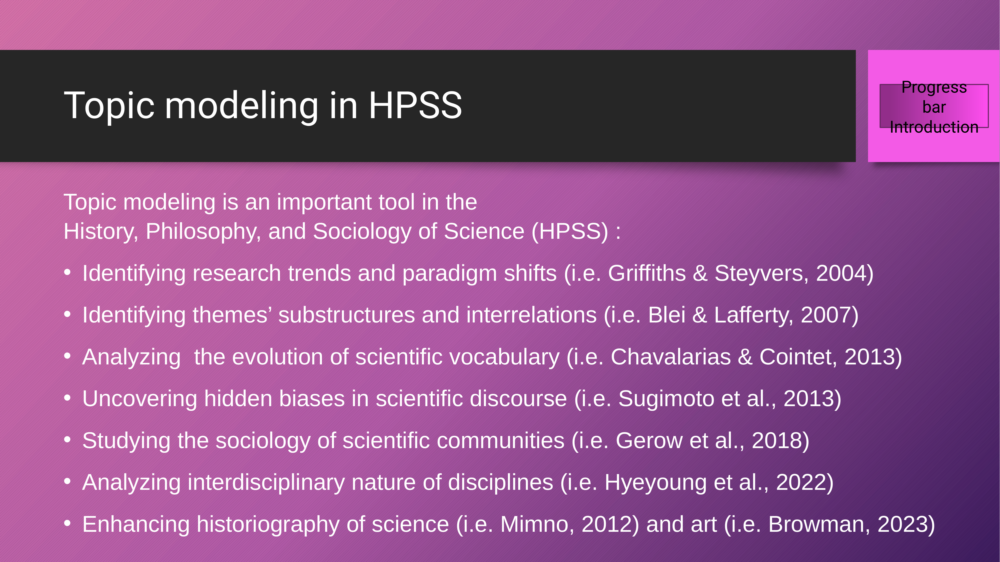
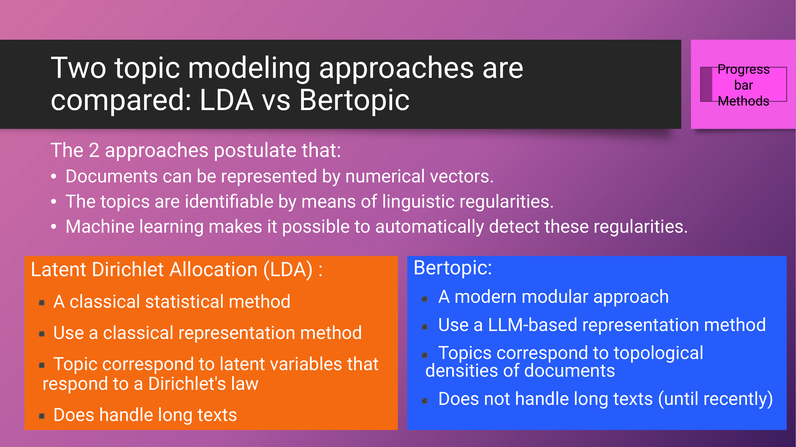
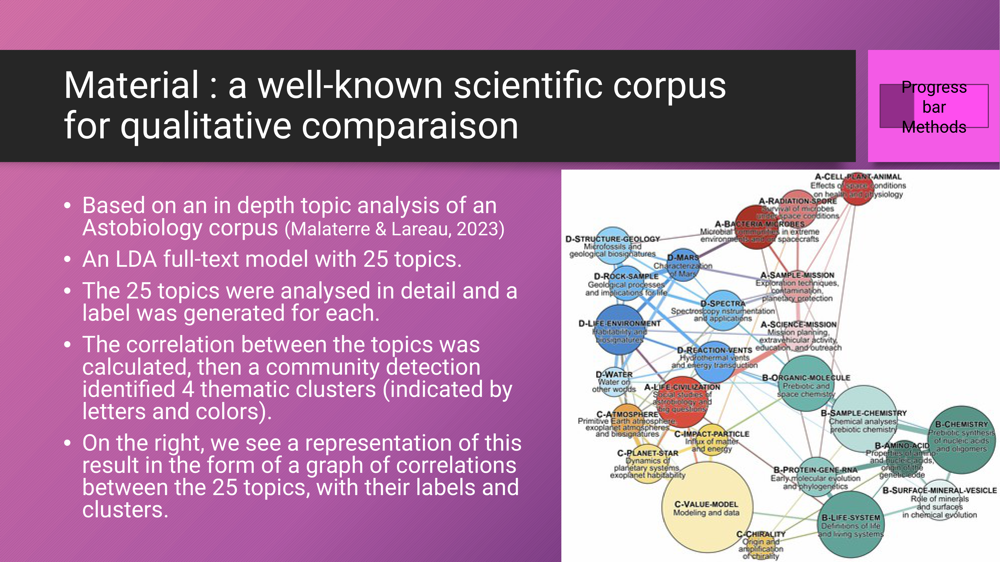
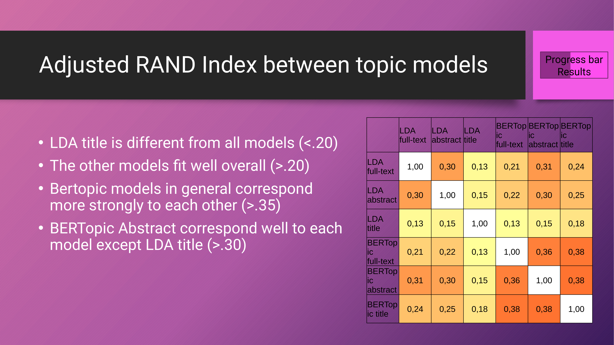
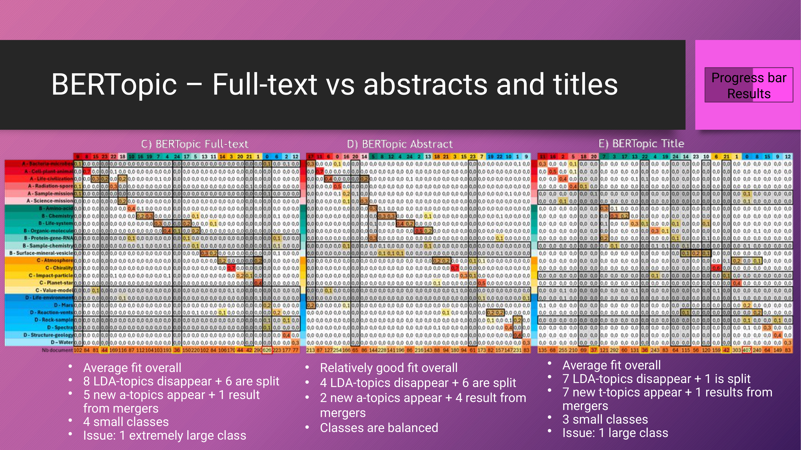
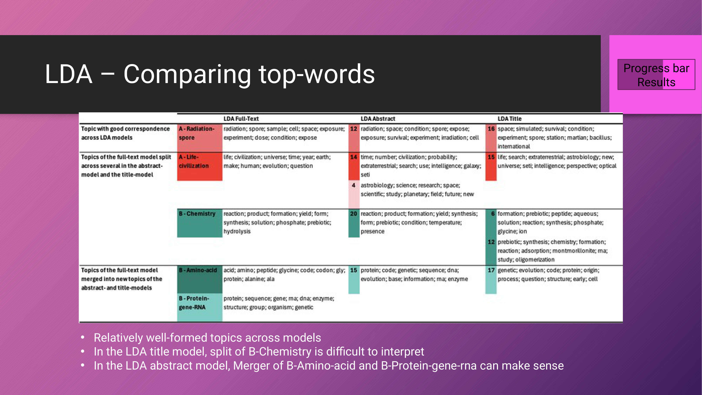
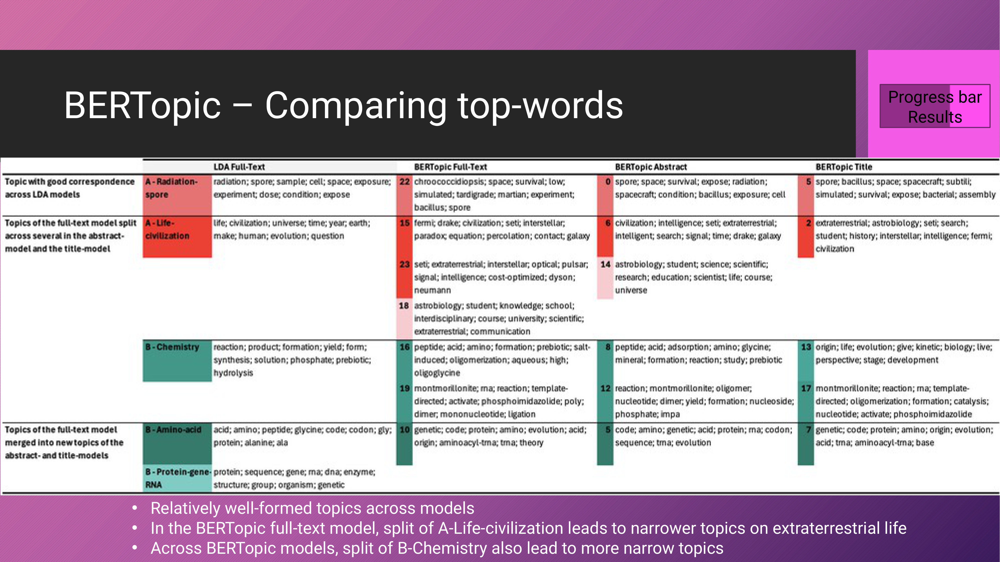
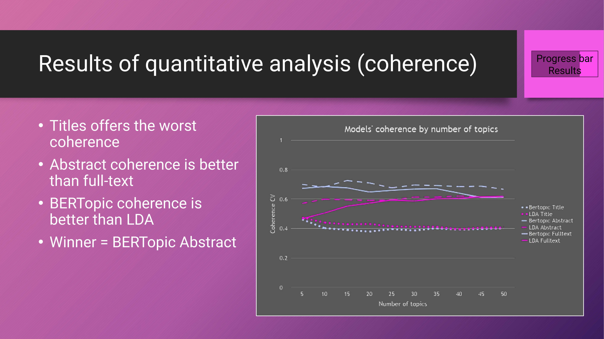
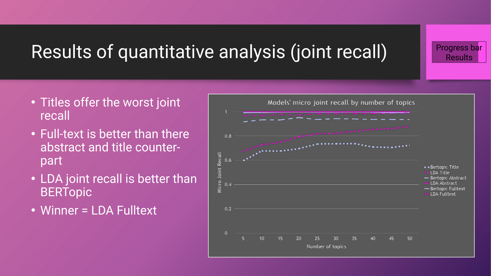

14 Titles, Abstracts, or Full-Texts? A Comparative Study of LDA and BERTopic Performance
Overview
This chapter details a comparative study assessing the efficacy of Latent Dirichlet Allocation (LDA) and BERTopic models when applied to distinct textual levels: titles, abstracts, and full texts within a scientific corpus. The authors aimed to ascertain whether topic modelling on titles or abstracts suffices, or if full-text analysis remains indispensable, particularly given the substantial resources required for its processing.
Their methodology involved constituting a corpus of scientific articles, segmenting these into titles, abstracts, and full texts, and subsequently applying both LDA and BERTopic approaches. A comprehensive analysis, encompassing both qualitative and quantitative methods, facilitated the comparison of the resulting topic models. Key quantitative metrics included the Adjusted Rand Index, Topic Diversity, Joint Recall, and Coherence CV.
The authors’ findings indicate that title-based models generally exhibit poor performance, whilst abstract models consistently demonstrate robust and meaningful topic extraction, often aligning well with full-text models. Full-text models, whilst offering comprehensive coverage, can present challenges such as loosely defined topics or class-size imbalances, particularly with BERTopic. Ultimately, the study recommends employing topic modelling on abstracts or full texts with either LDA or BERTopic, provided such approaches do not lead to misclassification of relevant documents.
14.1 Research Question and Methodological Approach

This research addresses a critical inquiry: whether applying topic modelling solely to titles or abstracts suffices, or if full-text analysis remains an indispensable requirement. This question gains particular urgency given the substantial resources demanded for the acquisition, preprocessing, and subsequent analysis of extensive full-text corpora.
To investigate this, the authors meticulously constituted a corpus of scientific articles. They then systematically identified and segmented the title, abstract, and full-text sections from each article. Subsequently, they applied two prominent topic modelling approaches—Latent Dirichlet Allocation (LDA) and BERTopic—to each of these textual levels. The resulting topic models underwent rigorous analysis and comparison, employing both qualitative and quantitative methodologies.
The overall workflow involved segmenting the scientific corpus into titles, abstracts, and full texts. Each segment then served as input for both LDA and BERTopic models. The outputs from these models were then subjected to both qualitative and quantitative scrutiny. This comprehensive approach aimed to provide robust insights into the comparative performance of these models across different textual granularities.
Beyond this specific investigation, topic modelling itself stands as a vital analytical instrument for processing vast scientific literature, especially within the history, philosophy, and sociology of science. Historically, researchers have deployed topic modelling for diverse tasks, including discerning research trends and paradigm shifts, identifying thematic substructures and interrelationships, and charting the evolution of scientific vocabulary. These prior applications have consistently involved various textual structures, ranging from titles and abstracts to complete full texts.
14.2 Material: Astrobiology Corpus for Qualitative Comparison

The authors grounded this study in an extensive topic analysis of an astrobiology corpus, previously detailed by Malaterre and Lareau in 2023. Following a thorough evaluation process, they selected a full-text LDA model comprising 25 distinct topics as the primary material for comparison.
Their analysis of these 25 topics involved a meticulous examination of their most representative words and documents, enabling the authors to assign a descriptive name to each topic based on its key terms. Subsequently, they compared the topics by calculating their mutual correlation, a metric derived from the topics’ presence within the documents. A community detection algorithm then identified four thematic clusters, designated by letters A, B, C, and D, and visually distinguished by red, green, yellow, and blue colours, respectively.
A graphical representation visually conveys these findings, illustrating the correlations amongst the 25 topics. This graph incorporates topic labels and the colour variations corresponding to their thematic clusters. Crucially, the thickness of the lines connecting topics denotes the strength of their correlation, whilst the size of each circle reflects the topic’s overall prevalence across all documents. This comprehensive analytical framework enables a robust qualitative comparison of the six distinct topic models under investigation.
14.3 Methodology: Quantitative Analysis Metrics

For the quantitative dimension of this study, the authors employed four distinct metrics to compare the various topic models. Firstly, the Adjusted Rand Index (ARI) served to evaluate the similarity between two document clusterings, with a correction applied for chance agreement. This metric precisely quantifies the extent to which documents cluster together, or diverge, across different models.
Secondly, Topic Diversity assessed the proportion of distinct top words, thereby determining whether individual topics within a given model were characterised by unique vocabulary. Thirdly, Joint Recall measured the average document-topic recall in relation to any topic’s top words, evaluating how effectively these top words collectively represented the documents assigned to each topic. Finally, Coherence CV, calculated as the average cosine relative distance between top words within topics, provided an assessment of whether these top words formed a semantically meaningful grouping. Each of these metrics is underpinned by specific mathematical formulations, ensuring rigorous quantitative comparison.
14.4 Results: Adjusted Rand Index Between Topic Models

The Adjusted Rand Index (ARI) provides crucial insights into the similarities amongst the six topic models. A value of zero for this metric indicates a clustering equivalent to random assignment. Analysis of the heatmap reveals that the LDA model applied to titles stands out as the most distinct, consistently demonstrating poor similarity with all other models, as evidenced by ARI values below 0.20, depicted by yellow hues in the visualisation.
Conversely, the remaining models generally exhibit a superior overall match, with ARI values consistently exceeding 0.20. Notably, BERTopic models display a stronger internal correspondence, with their inter-model ARI values typically surpassing 0.35. The BERTopic abstract model emerges as particularly central within this network of similarities, demonstrating robust correspondence with every other model, apart from the outlier LDA title model, with values consistently above 0.30. The heatmap visually encapsulates these relationships, where warmer colours signify higher degrees of similarity between the compared topic models.
14.5 Results: LDA Full-text Versus Abstracts and Titles
A more granular analysis of the LDA models provides detailed insights into their interrelationships. Table A, which compares the LDA full-text model with the LDA abstract model, indicates a generally good overall fit. This strong correspondence is evident from the reddish diagonal in the table, signifying that each topic from one model typically aligns with a topic from the other, sharing a high proportion of common documents.
However, this alignment is not without dynamic shifts. Three full-text LDA topics effectively disappear, represented by long horizontal dark grey lines. Conversely, three full-text topics fragment into multiple topics within the abstract model, visible as short horizontal dark grey lines. The abstract model also sees the emergence of three entirely new topics, marked by long vertical dark grey lines, whilst three topics arise from mergers, again indicated by short horizontal dark grey lines. Furthermore, one small class, comprising fewer than 50 documents, is discernible within the abstract topics.
In stark contrast, Table B, comparing the LDA full-text model with the LDA title model, reveals a poor overall fit. This disparity necessitates substantial reorganisation, manifested by a proliferation of vertical and horizontal dark lines across the table. This indicates that numerous full-text topics vanish, whilst a considerable number of new abstract topics emerge, highlighting a significant divergence in thematic representation.
14.6 Results: BERTopic Full-text Versus Abstracts and Titles

Analysis of the BERTopic models, when compared against the LDA full-text baseline, reveals varied performance. Table C, which juxtaposes LDA full-text with BERTopic full-text, indicates an average overall fit. Within this comparison, eight LDA topics vanish along the horizontal axis, whilst six LDA topics fragment into the BERTopic model. Conversely, the vertical axis shows the emergence of five new BERTopic topics, with one topic resulting from mergers. A notable observation from the total document count is the presence of four small classes alongside one exceptionally large class.
Moving to Table D, the comparison between LDA full-text and BERTopic abstract demonstrates a relatively good overall fit. Here, four LDA topics disappear, whilst six topics undergo splitting. The vertical axis reveals two new BERTopic topics appearing and four topics resulting from mergers. Crucially, this model maintains balanced class sizes.
Finally, Table E, comparing LDA full-text with BERTopic title, again indicates an average overall fit. In this instance, seven LDA topics disappear, and one topic splits. The vertical axis shows seven new BERTopic topics emerging, with one topic resulting from a merger. The total document count for this model highlights three small classes and one large class. These heatmaps collectively illustrate the proportions of shared documents between topics across these diverse model comparisons.
14.7 Results: LDA - Comparing Top-words

An examination of the top words within the LDA models revealed that topics were generally well-formed across all iterations. The authors observed several robust topics that maintained strong correspondence across the full-text, abstract, and title models. The topic “A-Radiation-spore” serves as a prime example of this consistency.
Conversely, certain topics from the full-text model fragmented into multiple, more granular topics within both the abstract and title models. For instance, the splitting of “A-Life-civilization” proved semantically coherent, yielding a broader topic encompassing research in astrobiology. However, the fragmentation of “B-Chemistry” presented a more ambiguous case, necessitating further analysis for clear interpretation.
Furthermore, the study identified instances where topics from the full-text model coalesced into new, merged topics within the abstract and title models. A notable example is the merger of “B-Amino-acid” and “B-Protein-gene-rna” in the LDA abstract model. This particular consolidation formed a more general topic, which aligns logically with the underlying subject matter. The visual representation provides side-by-side tables illustrating the top words for selected topics across these LDA models.
14.8 Results: BERTopic - Comparing Top-words

Continuing the assessment of top words, the three BERTopic models also yielded relatively well-formed topics. The robustness of “A-Radiation-spore” persisted across all models, including LDA Full-text, BERTopic Full-text, BERTopic Abstract, and BERTopic Title, underscoring its consistent thematic representation.
Whilst “A-Life-civilization” generally maintained its stability across the BERTopic models, it exhibited some instances of splitting. This fragmentation led to the emergence of more narrowly defined topics specifically pertaining to extraterrestrial life. Similarly, the “B-Chemistry” topic also underwent splitting across the BERTopic models, resulting in a series of more focused thematic areas. The visual data provides comparative tables of top words from selected topics across these models.
14.9 Results of Quantitative Analysis: Coherence
The coherence metric, specifically Coherence CV, provides a quantitative assessment of the semantic meaningfulness of the top words within each topic. Across a range of topics from 5 to 50, distinct patterns emerged. Models based on titles consistently exhibited the poorest coherence. Conversely, abstract models demonstrably outperformed full-text models in this regard.
Furthermore, BERTopic models generally achieved superior coherence compared to LDA, particularly for abstract and title-based analyses. However, this performance differential tended to diminish as the number of topics increased, indicating a convergence in coherence scores at higher topic counts. Ultimately, the BERTopic abstract model unequivocally emerged as the leading performer in terms of topic coherence. A line graph visually represents these trends, plotting the Coherence CV for each of the six models against varying numbers of topics.
14.10 Results of Quantitative Analysis: Diversity

Regarding the diversity of top words characterising the topics, a clear trend emerged: diversity generally diminishes as the number of topics increases. Within this context, models derived from titles consistently offered the highest diversity, surpassing their abstract or full-text counterparts.
Moreover, BERTopic models demonstrated superior diversity compared to LDA across the board. The BERTopic title model ultimately emerged as the top performer in terms of diversity, with the BERTopic full-text model closely trailing. A line graph visually illustrates these diversity trends for each of the six models across varying topic counts.
14.11 Results of Quantitative Analysis: Joint Recall
The Joint Recall metric assesses the efficacy with which the top words collectively represent every document assigned to a given topic. Analysis revealed that models based on titles consistently yielded the poorest recall. Conversely, full-text models demonstrated superior performance compared to their abstract and title counterparts.
In terms of algorithmic performance, LDA models generally exhibited better Joint Recall than BERTopic. The LDA full-text and BERTopic full-text models emerged as the leading performers in this category, with the BERTopic abstract model following very closely behind. A line graph visually depicts the micro Joint Recall for each of the six models across a range of topic numbers.
14.12 Summary of Model Performance

The authors compiled the individual assessment results to offer a holistic perspective on the models’ performance. For each criterion—overall fit, top-words, coherence, diversity, and joint recall—a circular representation indicates performance: a black circle denotes the highest score, a white circle signifies a lesser score, and a half-black, half-white circle indicates intermediate performance. Crucially, the study underscores that no single model emerges as universally superior; rather, diverse research objectives inherently dictate varying needs and, consequently, different model choices.
For instance, if the primary objective involves the discovery of main topics without stringent requirements for precise document classification, then issues such as poor recall or large class sizes might be acceptable. In such scenarios, the BERTopic Full-text model performed commendably, albeit with some observed class imbalance. Similarly, whilst far from optimal, the BERTopic Title model did yield certain robust topics that were consistently identified across other models.
Conversely, if the aim is to achieve maximum document coverage across all topics, then neither BERTopic Full-text nor BERTopic Title is recommended, as both approaches lead to large document classes and, in the case of BERTopic Title, poor recall. Furthermore, the LDA Title model receives a general non-recommendation due to its consistently poor performance across nearly all assessments. In essence, the study advocates for conducting topic modelling on either abstracts or full texts, employing either LDA or BERTopic, provided that such applications do not result in the misclassification of documents pertinent to specific topics.
14.13 Discussion and Conclusion

This research yields several pivotal findings. Firstly, title models consistently exhibit poor performance, primarily attributable to the inherent lack of information within titles, which can consequently lead to erroneous document classification. Nevertheless, the BERTopic title model, surprisingly, generated numerous meaningful topics, suggesting that future efforts might focus on striking a balance between precisely defined topics and comprehensive document coverage.
Secondly, full-text models occasionally encounter difficulties in processing vast quantities of information. With LDA, topics can become more broadly defined and encompass wider coverage, potentially including secondary or transverse themes such as methodologies. Conversely, BERTopic, when applied to full texts, can produce overly narrow topics, resulting in inadequate document coverage and issues with class size.
Thirdly, abstract models consistently demonstrate strong performance with summary information. Their results align remarkably well with the LDA full-text model, as well as with both LDA and BERTopic abstract models. This consistency underscores their utility in capturing core thematic content.
Fourthly, the study highlights the notable robustness of topics. Across the board, the authors identified highly similar topics, a finding that facilitates the application of meta-analytic methods to pinpoint the most enduring and robust themes. Moreover, this consistency suggests the potential for employing relative distance metrics across models to identify an optimal solution; in this study, the BERTopic abstract model emerged as such an optimum, performing exceptionally well across all other metrics.
Finally, the findings prompt a consideration of new model development. It appears feasible and potentially beneficial to leverage the structural information inherent in documents—specifically, full text, abstract, and title—to extract more semantically rich sets of top words or topics.